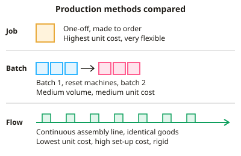

GCSE Business · Topic 4
Operations Management
This topic covers operations management, how a business turns inputs into products that customers want.
We look at production methods, productivity, stock control, quality, supply chains, location and customer service.
The aim throughout is to produce the right quality at the lowest cost, without letting customers down.
- 6 subtopics
- 374 questions
- Free: 4.1 notes and 10 questions
In this topic
- 4.1Production processes: job, batch and flow production, labour- vs capital-intensive methodsFree below · 57 questions
- 4.2Productivity and efficiency: calculating productivity and the impact of technology on outputOpen in Full Marks · 71 questions
- 4.3Stock control and lean production: buffer stock, just-in-time and reading stock-control graphsOpen in Full Marks · 59 questions
- 4.4Quality management: quality control vs quality assurance, the cost of poor quality and its effect on reputationOpen in Full Marks · 61 questions
- 4.5Supply chains, procurement and managing supplier relationshipsOpen in Full Marks · 69 questions
- 4.6Business location, the sales process and customer serviceOpen in Full Marks · 57 questions
4.1 · Free notes
Production processes: job, batch and flow production, labour- vs capital-intensive methods

Key points
- Job production makes a single, one-off product to the customer's exact specification, e.g. a wedding dress, a bridge or bespoke furniture. It needs skilled workers and gives high quality and a high price, but it is slow and the unit cost is high.
- Batch production makes a group (batch) of identical products, then the equipment is reset for the next batch, e.g. bakery loaves, paint or a clothing range. It is flexible because the product can be changed between batches. It causes downtime while machines are reset and needs storage for work in progress.
- Flow production (mass or continuous production) makes large volumes of standardised products non-stop on an assembly line, often 24 hours a day, e.g. cars or canned drinks. It gives the lowest unit costs through economies of scale.
- Disadvantages of flow production are very high set-up costs and inflexibility, because the line cannot easily switch products. A breakdown can stop the whole line, and repetitive tasks can demotivate workers.
- Choosing a method depends on the product (unique or standard), the size and predictability of demand, the budget and the quality wanted. High demand for a standard product suits flow, varied orders suit batch, and a personalised product suits job production.
- Labour-intensive production relies mainly on people, so labour is a high proportion of total costs, e.g. hairdressing, handmade jewellery or a tailor. It is flexible and personal, but wages are costly, output is slower and human error is more likely.
- Capital-intensive production relies mainly on machinery, robots and automation, so capital is a high proportion of the costs, e.g. a car plant or bottling line. It has high start-up and maintenance costs but gives consistent quality, fast output and lower unit labour costs.
- Equation: unit cost = total cost ÷ output. For example, £12,000 for 400 units gives £30 per unit. Spreading fixed costs over more units is why unit cost falls as output rises.
- Capital-intensive production has risks. Machines need maintenance and can break down, redundancies may follow and staff need retraining. It suits businesses with high, steady demand, not those with small or uncertain demand.
- Exam technique: name the method, then link it to the context given. For example, 'Batch production suits the bakery because it sells several flavours in turn, but resetting the ovens between batches adds downtime.'
- Compare labour-intensive and capital-intensive methods by using the share of costs. For example, labour of £30,000 out of £50,000 total costs (60%) is more labour-intensive than labour of £10,000 out of £50,000 (20%).
In more detail
- Worked unit cost comparison: a tailor makes one suit at a total cost of £600, while a factory makes 10,000 suits for £800,000 → £80 per suit, because its fixed costs are spread over far more units.
- Flow example: car makers such as Nissan in Sunderland use flow production, with robots working along assembly lines.
- Mixing methods: many firms combine methods, e.g. a furniture maker uses batch production for standard chairs and job production for custom orders.
- Quick comparison: job → high price, high quality, slow. Flow → low unit cost, standard product, fast. Batch sits in between.
Practice
Production processes: job, batch and flow production, labour- vs capital-intensive methods: 10 questions
Pick an answer to check it, or open the answer for the explanation.
1. A craftsperson builds one bespoke oak staircase to a customer's exact measurements. Which production method is this?
- Mass production
- Flow production
- Batch production
- Job production
Show answer
D: Job production. One-off products made to a customer's specification are job production. Batch makes groups of identical items; flow and mass production make large volumes of standard goods.
2. Which is the main advantage of flow production for a large manufacturer?
- Easy to adapt to each customer's wishes
- Low unit costs from economies of scale
- Low set-up costs for machinery
- Highly skilled and varied work for staff
Show answer
B: Low unit costs from economies of scale. Very large volumes of identical products spread fixed costs and lower the cost per unit. Set-up costs are high and the line is inflexible.
3. A bakery bakes 300 white loaves, cleans the equipment, then bakes 200 seeded loaves in the same ovens. This is:
- Job production
- Flow production
- Mass production
- Batch production
Show answer
D: Batch production. Making groups of identical items one batch at a time, with the equipment reset between them, is batch production.
4. Which is a disadvantage of flow production?
- Unit costs are very high
- Each unit takes a very long time
- It cannot use automation
- A breakdown can halt the whole line
Show answer
D: A breakdown can halt the whole line. Products pass through linked stages, so one machine failing stops the whole line. Flow production is fast, has low unit costs and uses automation.
5. Which business is most likely to be labour-intensive?
- A fully automated warehouse
- A car plant using robots
- A drinks bottling plant running 24 hours
- A hair salon
Show answer
D: A hair salon. A hair salon relies mainly on skilled staff, so labour is a large share of its costs. The other businesses depend mainly on machinery.
6. A firm replaces hand assembly with robots. What is the most likely short-run effect?
- Higher labour cost per unit
- Higher fixed costs from buying machinery
- More personalised products
- Lower fixed costs
Show answer
B: Higher fixed costs from buying machinery. Robots need large capital spending, which raises fixed costs. Labour cost per unit usually falls and products become more standardised.
7. A firm makes 400 units at a total cost of £12,000. What is the average cost per unit?
- £300
- £12.40
- £3
- £30
Show answer
D: £30. Unit cost = total cost ÷ output = £12,000 ÷ 400 = £30.
8. Which is a disadvantage of batch production compared with flow production?
- It needs no storage of work in progress
- Unit costs are always the lowest
- Only one product can ever be made
- Machines must be reset between batches
Show answer
D: Machines must be reset between batches. Resetting equipment between batches causes downtime and work in progress needs storage. Batch is more flexible than flow.
9. Why is the price of job-production items usually high?
- They are made in huge volumes
- Skilled labour is used and costs cannot be spread over many units
- They need no skilled workers
- Machines make them very quickly
Show answer
B: Skilled labour is used and costs cannot be spread over many units. Each item is unique and made by skilled staff, so there are no economies of scale. The cost per item is high and the price reflects this.
10. A plant makes 5,000 identical cars a week on a moving assembly line running 24 hours a day. This is:
- Batch production
- Flow production
- Labour-intensive production
- Job production
Show answer
B: Flow production. Continuous output of standardised products on an assembly line is flow production. The heavy use of machinery also makes it capital-intensive.
Keep going in Full Marks
Full Marks has 57 questions on Production processes: job, batch and flow production, labour- vs capital-intensive methods (47 more than here), set out in practice levels. You also get notes and 3D models for all 6 subtopics of Operations Management, plus games, timed exams and past papers.